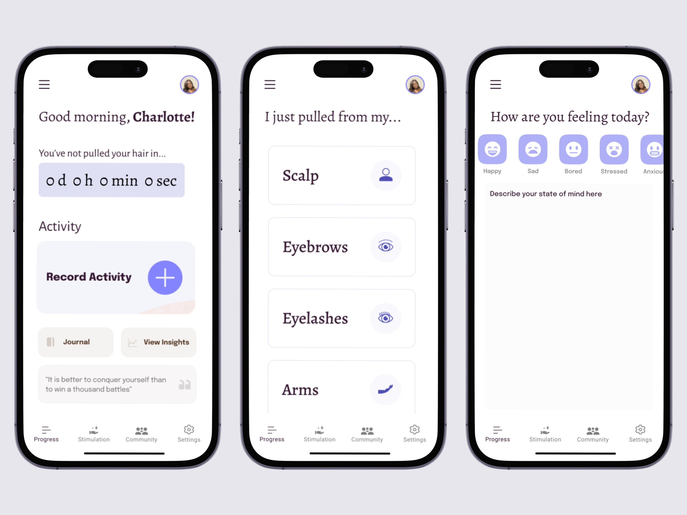
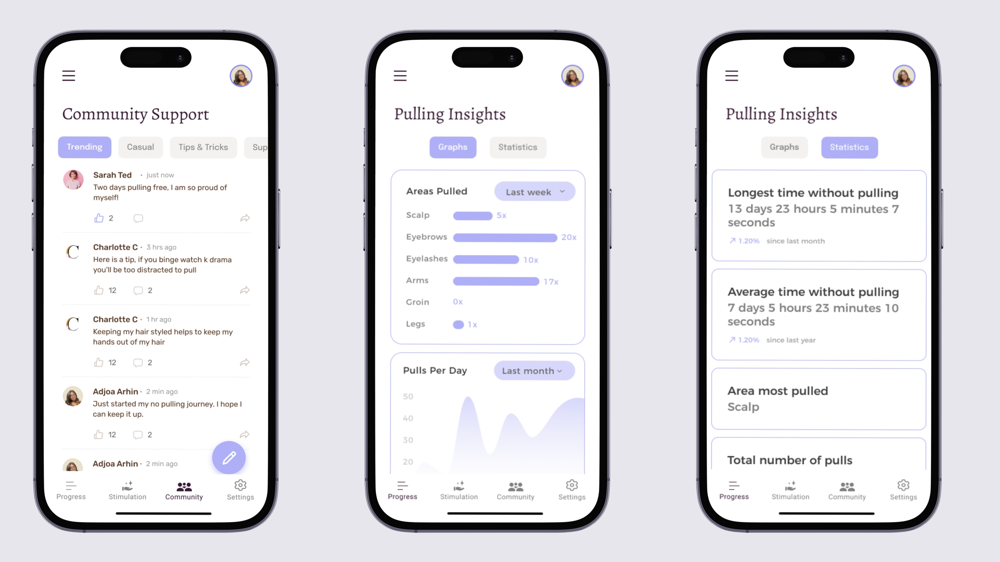

Trichotillomania treatments like habit reversal training require regular clinic visits and don't help in the moment when pulling actually happens. We wanted to test whether a real-time haptic alert on the wrist could disrupt the behaviour as it occurs. But we weren't hardware engineers and didn't have a budget for custom devices.
We bought a vibrating dog training collar, put it on participants' wrists, and used Wizard-of-Oz testing: we watched for hair-directed behaviours and triggered the vibration manually. This let us test the interaction pattern without building the technology. The prototype was uncomfortable and every participant said so. That wasn't the point. The point was to find out if the concept works before investing in something expensive.
We induced stress through trivia (country flags, company logos) and observed how many times participants reached for their hair. First round was baseline. Second round had the vibrating collar active.
Behaviours dropped from an average of 8.25 to 3.50. Not statistically significant with 8 people (p=.08), but every single participant reported it helped them self-regulate. One participant with a formal trichotillomania diagnosis said the bracelet was better than having another person hold you accountable because it removed the social shame.
The companion app needed to support the bracelet intervention with long-term tracking, self-awareness tools, and community features. I mapped out the full information architecture in low-fidelity first: welcome flow, pull logging, diary entries with mood tracking, community forum, data pages with graphs and statistics, haptic feedback settings.
The app works with or without the bracelet. Core features include a pull-free progress timer, body area selection for logging where pulling happens, mood journaling linked to behaviour, and data insights showing patterns over time.
I designed a community forum because isolation is a major barrier to managing trichotillomania. Users can share tips, celebrate streaks, and support each other. The forum has categories (trending, casual, tips and tricks, support) to keep it organized without feeling clinical.

A "you haven't pulled in X days" counter sounds motivating. But participant P8 pointed out that seeing it reset to zero after a setback could be deeply discouraging, especially for a condition that naturally involves relapse. I designed alternatives: showing the longest streak instead of the current one, framing resets as "days since last incident" rather than lost progress, and adding positive affirmations when the counter resets.
The principle: treat relapse as a data point, not a failure. Progress in mental health isn't linear, and the design needed to reflect that without being patronizing.

"The haptic feedback helped promote accountability of the hair pulling behaviours and it was preferred over having another person keep you accountable."
The biggest gap: one participant started using their other hand to pull while wearing the device. A single wrist device isn't enough. Research on similar interventions shows that two bracelets brought face-touching behaviours to almost zero. A ring form factor would also solve the comfort problems every participant mentioned.
The trivia stress induction was mild (ethics board constraints). Real-world stressors would trigger stronger pulling urges, which means the intervention effect could be even stronger in practice than what we measured. A longer study with more participants and real daily use would give much better data on whether the behaviour change persists.